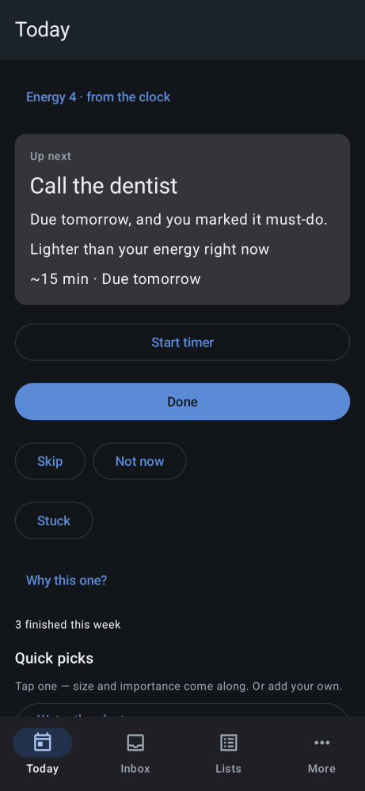
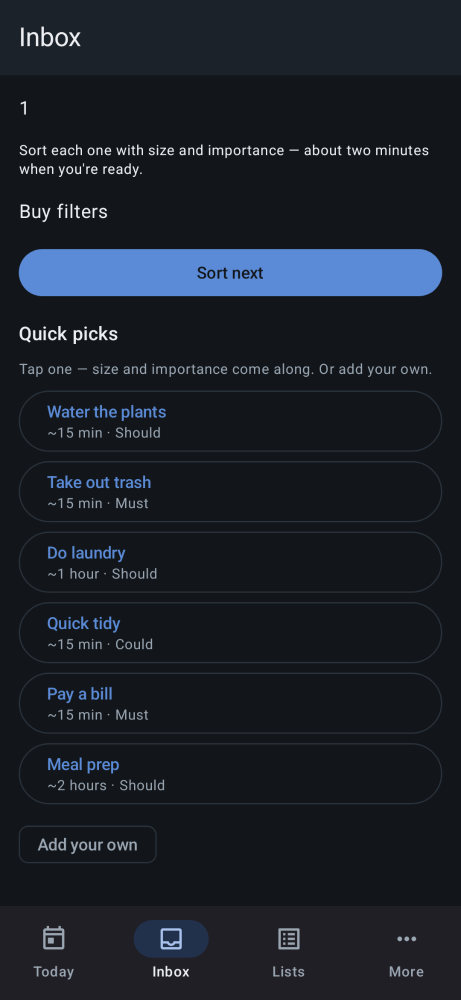

FocusUp
FocusUp is a task app built for ADHD brains. Standard productivity tools treat ADHD like laziness that needs more reminders, and they fail on the actual hard parts: task paralysis, time blindness, and deciding what matters next. FocusUp works as an external executive function. It decides what to do next, so you do not have to.
Help, never shame.
Android · 14-day free trial, then a one-time $6.99 unlock. No subscription.
- One task at a time. The app picks the single next thing. No overwhelming lists staring back at you.
- Real prioritization. Due date, energy estimate, and your own ranked importance, combined with a formula the app can explain.
- Adaptive nudges. Reminders that adjust to your actual behavior. No shame spirals, no streaks, no red overdue badges.
- Brain-dump inbox. Capture everything fast, then triage it later when you have the bandwidth.
- Breakdowns from Brain. With Scryware Brain installed, a job that feels too big gets broken into steps you can actually start.
- Plain-language commands. Tell FocusUp what you mean in your own words, and it drafts the task for you to confirm.
- 100% on-device. Your tasks and patterns stay on your phone.


Privacy
FocusUp has no account and no cloud sync. Your tasks stay on your phone, and Scryware never sees them. The full wording, including how the trial and unlock work, is in the FocusUp section of the privacy policy.
How to get it
FocusUp is in closed testing on Google Play. Join the Scryware Testers group first, then opt in below and install it from the Play Store. Testing only counts while the app stays installed, so keep it on your phone. If you want the Brain-powered features, install Scryware Brain as well and open it once so it finishes setting up.